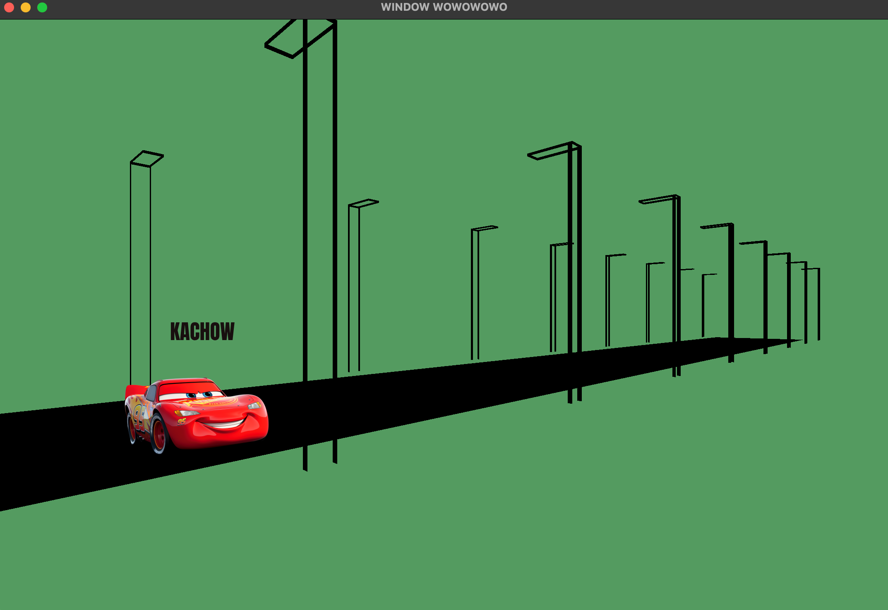

About
Just a simple 3D graphics engine built in Rust
It was done as a passion project for me to blend my love for Rust and my love for game development / graphics. You can walk around and view a road model that I made
View on GitHub
Just a simple 3D graphics engine built in Rust
It was done as a passion project for me to blend my love for Rust and my love for game development / graphics. You can walk around and view a road model that I made
View on GitHub